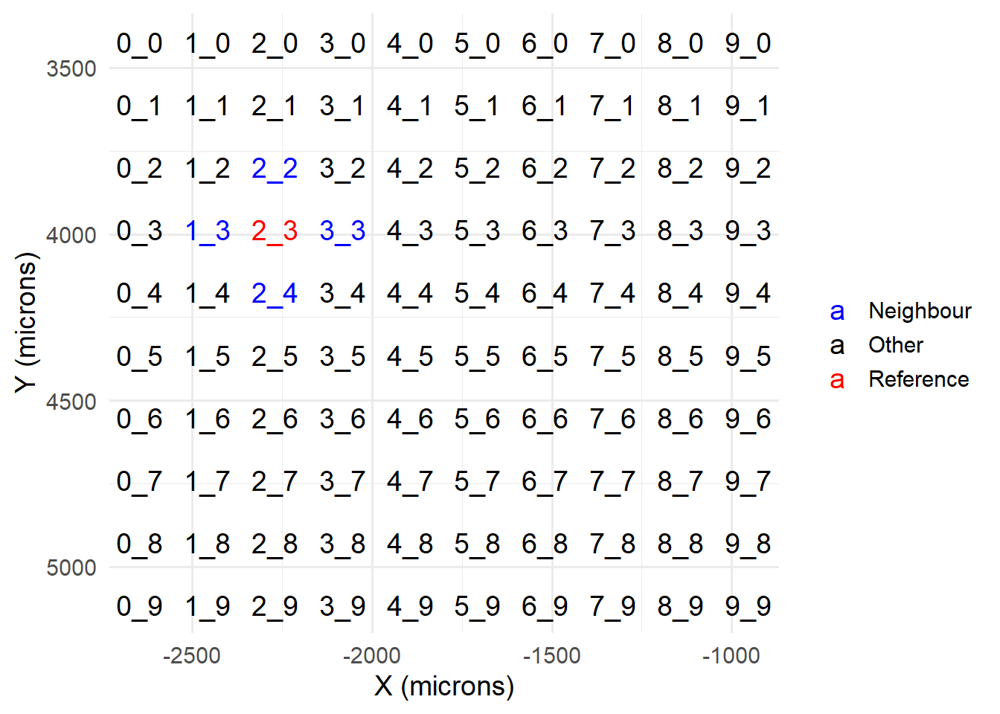
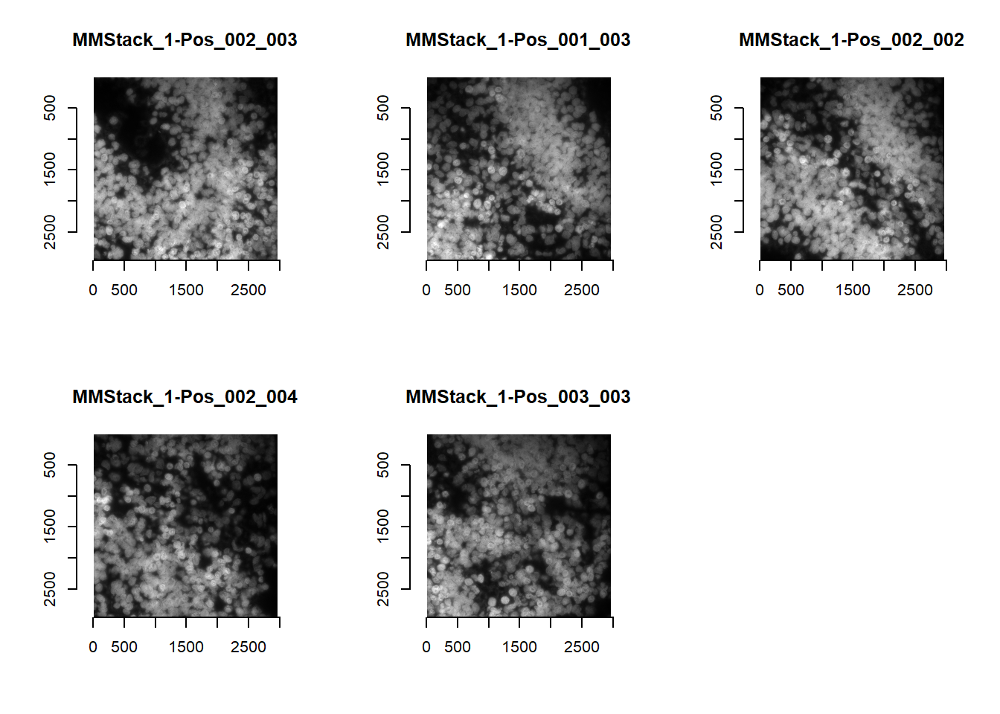
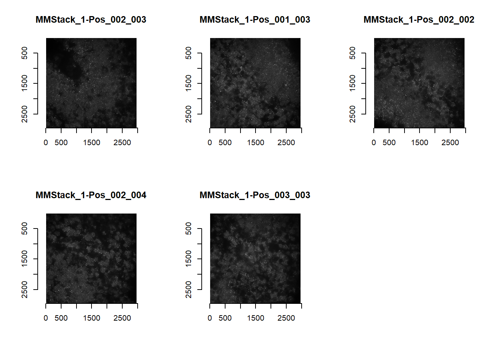
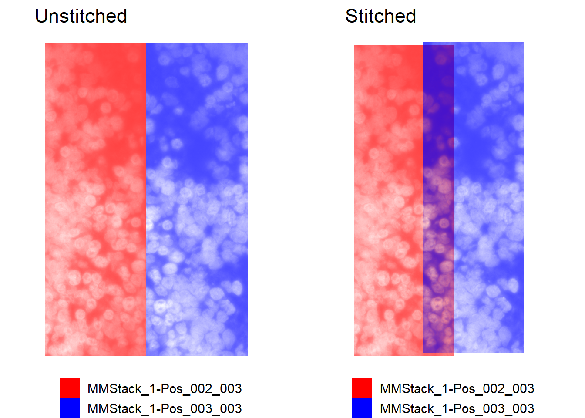

Chapter 6 Stitching
Stitching is the task of aligning adjacent overlapping FOVs, to obtain a coherent coordinate system across all FOVs. It can be done on DAPI images, or on the reference bit in MERFISH (i.e. the image that registration is performed with respect to – typically the first bit). It can thus be done in parallel with the previous two tasks.
Alternatively, recall that as part of spotcalling (Chapter 3.4.2) and cell segmentation (Chapter 5.4), reference images are returned as REGIM_{ FOV Name }.png. Users may wish to use these instead; and so stitching will have to be performed after the previous two tasks.
library(masmr)
library(ggplot2)## Warning: package 'ggplot2' was built under R version 4.3.26.1 Pre-processing
Parameters established as before.
data_dir = 'C:/Users/kwaje/Downloads/JIN_SIM/20190718_WK_T2_a_B2_R8_12_d50/'
establishParams(
imageDirs = paste0(data_dir, 'S10/'),
imageFormat = '.ome.tif',
codebookFileName = list.files(paste0(data_dir, 'codebook/'), pattern='codebook', full.names = TRUE),
codebookColumnNames = paste0(rep(c(0:3), 4), '_', rep(c('cy3', 'alexa594', 'cy5', 'cy7'), each=4) ),
outDir = 'C:/Users/kwaje/Downloads/JYOUT/',
dapiDir = paste0(data_dir, 'DAPI_1/'),
pythonLocation = 'C:/Users/kwaje/AppData/Local/miniforge3/envs/scipyenv/',
fpkmFileName = paste0(data_dir, "FPKM_data/Jin_FPKMData_B.tsv"),
nProbesFileName = paste0(data_dir, "ProbesPerGene.csv"),
verbose = FALSE
)## Assuming .ome.tif is extension for meta files...At this stage, relevant metadata files (META_RESOLUTION.txt and GLOBALCOORD.csv) should have been created for both DAPI and MERFISH data using the readImageMetaData function (see previous Chapters). This is the minimum requirement for stitching with masmr. [Both are generated early in their respective pipelines.]
There should thus be two subdirectories as this stage, one for MERFISH data and one for DAPI data. Both should have the metadata files.
list.files( params$parent_out_dir, pattern = 'GLOBALCOORD.csv', recursive = T, full.names = T )## [1] "C:/Users/kwaje/Downloads/JYOUT/DAPI/GLOBALCOORD.csv"
## [2] "C:/Users/kwaje/Downloads/JYOUT/IM/GLOBALCOORD.csv"list.files( params$parent_out_dir, pattern = 'META_RESOLUTION.txt', recursive = T, full.names = T )## [1] "C:/Users/kwaje/Downloads/JYOUT/DAPI/META_RESOLUTION.txt"
## [2] "C:/Users/kwaje/Downloads/JYOUT/IM/META_RESOLUTION.txt"6.2 Loading images for stitching
For stitching, we will need to load a reference FOV, and the FOVs immediately surrounding it. For instance, let’s select the same FOV processed in previous Chapters. From one of the GLOBALCOORD.csv files, we expect to load the four FOVs in blue below, alongside our reference FOV (red).
params$current_fov <- 'MMStack_1-Pos_002_003'
gcx <- data.table::fread(
list.files( params$parent_out_dir, pattern = 'GLOBALCOORD.csv', recursive = T, full.names = T )[1],
data.table = F
)
gcx <- gcx[!duplicated(gcx$fov),]
gcx$X <- as.integer( factor(gcx$x_microns) )
gcx$Y <- as.integer( factor(gcx$y_microns) )
gcx$CX <- gcx$X + 1i * gcx$Y
gcx$fov_type <- ifelse(
gcx$fov==params$current_fov, 'Reference',
ifelse(
Mod( gcx$CX - gcx$CX[gcx$fov==params$current_fov] ) == 1,
'Neighbour', 'Other'))
gcx$short_name <- gsub('MMStack_1-Pos_|00', '', gcx$fov)
ggplot( gcx ) +
geom_text( aes(x=x_microns, y=y_microns, label=short_name, colour = fov_type),
size = 5 ) +
scale_colour_manual( name='', values = c('Reference' = 'red', 'Neighbour' = 'blue', 'Other' = 'black')) +
scale_y_reverse() + xlab('X (microns)') + ylab('Y (microns)') +
theme_minimal(base_size=14)
The actual loading is accomplished with the readImagesForStitch function. The default is to load MERFISH images.
## params$current_fov specifies which image to load
imList <- readImagesForStitch()
par(mfrow=c(2,3))
for(i in 1:length(imList)){
plot(imager::as.cimg(imList[[i]]), main=names(imList)[i])
}## Warning in as.cimg.array(imList[[i]]): Assuming third dimension corresponds to
## time/depth
## Warning in as.cimg.array(imList[[i]]): Assuming third dimension corresponds to
## time/depth
## Warning in as.cimg.array(imList[[i]]): Assuming third dimension corresponds to
## time/depth
## Warning in as.cimg.array(imList[[i]]): Assuming third dimension corresponds to
## time/depth
## Warning in as.cimg.array(imList[[i]]): Assuming third dimension corresponds to
## time/depthpar(mfrow = c(1,1))The subDirectory parameter allows for easy swapping between DAPI and MERFISH images.
imList <- readImagesForStitch( subDirectory = 'DAPI' )
par(mfrow=c(2,3))
for(i in 1:length(imList)){
plot(imager::as.cimg(imList[[i]]), main=names(imList)[i])
}## Warning in as.cimg.array(imList[[i]]): Assuming third dimension corresponds to
## time/depth
## Warning in as.cimg.array(imList[[i]]): Assuming third dimension corresponds to
## time/depth
## Warning in as.cimg.array(imList[[i]]): Assuming third dimension corresponds to
## time/depth
## Warning in as.cimg.array(imList[[i]]): Assuming third dimension corresponds to
## time/depth
## Warning in as.cimg.array(imList[[i]]): Assuming third dimension corresponds to
## time/depthpar(mfrow = c(1,1))
dapiList <- imListEvery time readImagesForStitch is run, a stitchParams environment object is generated. This functions similarly to params: it houses parameters for image handling and file saving. It also copies params$current_fov [It is separate from params owing to users possibly wishing to handle both MERFISH and DAPI images.]
ls( envir = stitchParams )## [1] "current_fov" "fov_names"
## [3] "fovs_loaded" "global_coords"
## [5] "im_format" "out_dir"
## [7] "processed_images_loaded" "resolutions"
## [9] "sub_directory" "verbose"From above, it is apparent that raw MERFISH images may require some image processing prior to stitching (e.g. brightening of image). We recommend the same image processing as done during image registration (Chapter 3.4.2).
If stitching is done after spotcalling is complete for all FOVs, processed images for the reference bit are accessible by setting loadProcessedImages to TRUE. As default, the loadProcessedImages parameter is FALSE. If TRUE, the function will first attempt to search for REGIM_{ FOV Name }.png images and load those instead. If unable to, loadProcessedImages is switched back to FALSE, and raw images loaded instead (failure to find processed images returned as a warning).
Otherwise, we can reprocess the raw images by specifying the imageFunction parameter. [The minimum and maximum brightness below come from outputs of getAnchorParams; this done early during the spotcalling pipeline (see Chapter 3.2.2).]
imFunction <- function( im ){
minBrightness = 0.0370383157674109 #First bit floor
maxBrightness = 0.288414576071673 #First bit cap
norm <-
imLowPass(im, floorVal = minBrightness, ceilVal = maxBrightness) +
imForDecode(im, floorVal = minBrightness, ceilVal = maxBrightness)
norm <- imNormalise(norm)
return( norm )
}
imList <- readImagesForStitch( subDirectory = 'IM', imageFunction = imFunction)
par(mfrow=c(2,3))
for(i in 1:length(imList)){
plot(imager::as.cimg(imList[[i]]), main=names(imList)[i])
}## Warning in as.cimg.array(imList[[i]]): Assuming third dimension corresponds to
## time/depth
## Warning in as.cimg.array(imList[[i]]): Assuming third dimension corresponds to
## time/depth
## Warning in as.cimg.array(imList[[i]]): Assuming third dimension corresponds to
## time/depth
## Warning in as.cimg.array(imList[[i]]): Assuming third dimension corresponds to
## time/depth
## Warning in as.cimg.array(imList[[i]]): Assuming third dimension corresponds to
## time/depthpar(mfrow = c(1,1))
merList <- imList6.3 Performing stitching
The task of stitching is similar to image registration and our stitching algorithm stitchImages similarly relies on cross-correlation to a reference image. As default, the first image in the list – which should also be the current FOV being processed – is used.
stitchResults <- stitchImages(merList)## Warning in stitchImages(merList): Z stack detected...Defaulting to MIP...knitr::kable(stitchResults, format = 'html', booktabs = T)| fov | shift_pixel |
|---|---|
| MMStack_1-Pos_001_003 | -2673+27i |
| MMStack_1-Pos_002_002 | -28-2651i |
| MMStack_1-Pos_002_004 | 26+2660i |
| MMStack_1-Pos_003_003 | 2657-27i |
Users may wish to stitch both DAPI and MERFISH images to compare.
## Keep the old stitch vector
df <- stitchResults
colnames(df)[2] <- paste0('merfish_', colnames(stitchResults)[2])
## Re-run stitching but with DAPI images
stitchResults <- stitchImages(dapiList, returnTroubleShootPlots = TRUE) ## Warning in stitchImages(dapiList, returnTroubleShootPlots = TRUE): Z stack
## detected...Defaulting to MIP...colnames(stitchResults)[2] <- paste0('dapi_', colnames(stitchResults)[2])
stitchResults[,colnames(df)[2]] <- df[match(stitchResults[,1], df[,1]),2]
knitr::kable(stitchResults, format = 'html', booktabs = T)| fov | dapi_shift_pixel | merfish_shift_pixel |
|---|---|---|
| MMStack_1-Pos_001_003 | -2664+25i | -2673+27i |
| MMStack_1-Pos_002_002 | -25-2664i | -28-2651i |
| MMStack_1-Pos_002_004 | 27+2664i | 26+2660i |
| MMStack_1-Pos_003_003 | 2664-27i | 2657-27i |
Stitching can be evaluated visually. These can be obtained by setting returnTroubleShootPlots in stitchImages to TRUE, or through manual use of the stitch_troubleshootPlots function (see documentation). The reference FOV is shown in red, while the neighbour is in blue.
## Plots are returned for each neihgbour, will show just one below
p_unstitched <- troubleshootPlots[['STITCH_EVAL']][[4]][['UNSTITCHED']]
p_stitched <- troubleshootPlots[['STITCH_EVAL']][[4]][['STITCHED']]
## Re-scale alpha so that low brightness is more solid
## We find this makes the stitch visually clearer for DAPI images
cowplot::plot_grid( plotlist = list(
p_unstitched + ggtitle('Unstitched') + scale_alpha(range=c(0.75, 0)),
p_stitched + ggtitle('Stitched') + scale_alpha(range=c(0.75, 0))
), nrow=1)
6.4 Saving stitch vectors
Finally, users may save the dataframe output using the saveStitch function. This is strictly not necessary, but is recommended, as it would ensure standardised file names and compatability with the rest of masmr.
saveStitch( stitchResults )
file.exists( paste0(stitchParams$out_dir, 'STITCH_', stitchParams$current_fov, '.csv') )## [1] TRUE